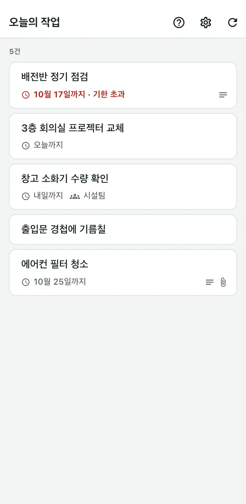
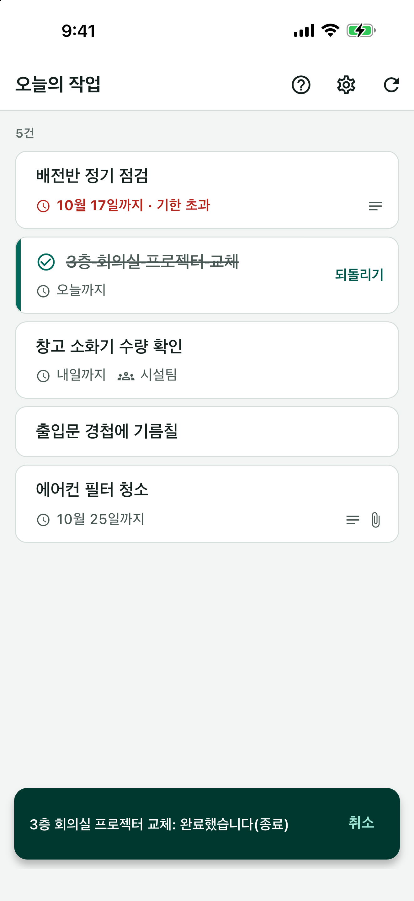
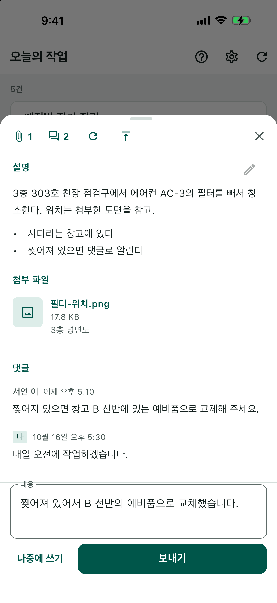

담당 작업을 확인하세요.
나 또는 소속 그룹에 배정된 미완료 작업을 확인할 수 있습니다. 작업을 열면 설명과 첨부 이미지를 볼 수 있습니다.

컴퓨터로 돌아간 뒤에야 Redmine을 업데이트하시나요? BeatMine으로 작업을 마친 자리에서 스마트폰으로 Redmine을 업데이트하세요. 팀에 진행 상황을 공유하고 프로젝트를 함께 진전시킬 수 있습니다.
무료로 이용할 수 있습니다
iPhone용 · iOS 15 이상

Redmine 6.0 / 6.1 / 7.0 지원 · 연결 환경 확인
Redmine 업데이트를 컴퓨터로 돌아갈 때까지 미루고 있다면, 현장에서 바로 처리해 보세요. BeatMine은 완료와 댓글을 기존 Redmine에 기록하므로 팀은 평소처럼 확인할 수 있습니다.
작업 내용을 확인한 다음,
그 자리에서 업데이트하세요.
나 또는 소속 그룹에 배정된 미완료 작업을 확인할 수 있습니다. 작업을 열면 설명과 첨부 이미지를 볼 수 있습니다.

작업을 마치면 해당 행을 오른쪽으로 스와이프하세요. Redmine에 반영되었는지 화면에서 확인할 수 있습니다.
교체한 부품이나 다음 담당자에게 전할 내용을 남겨 보세요. 댓글은 Redmine의 작업 이력에 저장됩니다.
작업 정보는 iPhone과 사용 중인 Redmine 사이에서 직접 전송됩니다. 개발자는 작업 정보를 수집하지 않습니다. API 키는 기기의 보안 저장소에 보관됩니다.
개인정보 처리방침 →팀에서 사용 중인 Redmine에 연결합니다. REST API가 활성화되어 있는지 모른다면 Redmine 관리자에게 확인하세요.
Redmine 설정에 따라 연결이나 일부 기능을 사용하지 못할 수 있습니다.
연결 조건 및 제한 사항 →무료로 이용할 수 있습니다
iPhone용 · iOS 15 이상
